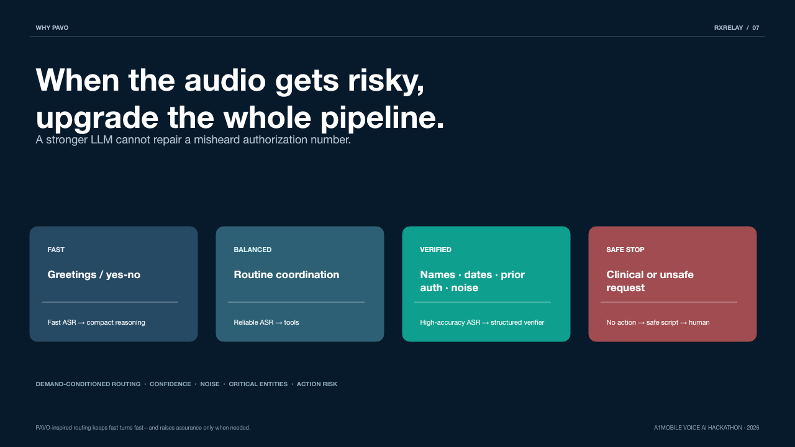

No action before consent
Every coordination and messaging path calls requireConsent(), which throws on a case without recorded, scope-limited permission.
a1mobile Voice AI Hackathon 2026
RxRelay is a consent-first voice coordinator for prescription access. It will not mark a case resolved because the conversation sounded resolved — only when the evidence exists.
git clone github.com/vnmoorthy/rxrelay
The problem
A prescription can be clinically approved and still be unreachable. Something stalls — a prior authorization, a stock issue, a form nobody sent — and the resolution path becomes a human loop: call the pharmacy, call the clinic, call the insurer, repeat the same context to each one, and end the day without a trustworthy answer.
Voice agents are an obvious fit for that loop. The problem is that most of them are graded on whether the conversation sounded resolved. An agent that says “I’ve taken care of it” and an agent that actually coordinated something are indistinguishable at the transcript layer — and in medication access, that gap is the entire risk.
A generic voice agent
RxRelay
The differentiator
Four independent facts must exist on the case record before the state machine will transition to resolved. Nothing in that decision is generative, probabilistic, or persuadable.
Every coordination and messaging path calls requireConsent(), which throws on a case without recorded, scope-limited permission.
Evidence flags are set by state transitions, never by model output. There is no code path from a generated sentence to a green check.
A rejected provider call leaves the action flag false, so the gate stays red. The live adapter refuses to record a completion without a provider-issued id.
A recorded clinic submission is not a resolved prescription. An independent pharmacy confirmation is still required before the case can close.

Architecture
A consented turn enters through the voice gateway, is routed by pipeline demand, and can only touch a counterpart through the permitted-action policy. The proof gate sits between the case engine and the patient — nothing reaches the patient as a resolution without passing it.
01 Ingress
02 Guard & route
03 Case engine
04 Outcomes

Where the logic lives
Research foundation
A better LLM cannot repair a misheard authorization number.
RxRelay’s router is grounded in PAVO: Pipeline-Aware Voice Orchestration with Demand-Conditioned Inference Routing. When a turn is uncertain or carries a critical entity, transcription and reasoning are upgraded together — because the failure that matters in medication access happens upstream of the language model.
Fast
Greetings, simple confirmations.
Fast ASR → compact reasoning → voice
Balanced
Routine status coordination, deeper conversation history.
Reliable ASR → tool-aware reasoning → voice
Verified
Low ASR confidence, noise, names, numbers, dates, prior auth, contradiction.
High-accuracy ASR → structured reasoning → deterministic verifier
Safe stop
Clinical advice, emergency cues, Rx changes, controlled-inventory, identity data.
No autonomous action → safe script → human handoff
Safe stop is evaluated first, before any confidence math, and it flags the case for human review so no downstream action can proceed.

Safety contract
RxRelay operates in the operational gap around a prescription. It is not a clinical system and does not attempt to become one. Urgent medical cues are treated as a handoff, not as an automation opportunity.
Live outbound telephony fails closed
Inbound voice does not enable outbound messaging. Live calls and SMS stay disabled until
ALLOW_LIVE_TELEPHONY=true and an allowlist of OTP-verified, explicitly
consented numbers is configured. The live adapter also refuses to record a completion
unless the provider returns an action id.
Run it
Node 20+ provides the HTTP server, test runner, environment loading, and fetch. The sandbox runs the complete demo without dialing or texting a real person.
$ git clone https://github.com/vnmoorthy/rxrelay.git
$ cd rxrelay
$ cp .env.example .env
$ npm test
✔ PAVO routing upgrades the full pipeline
✔ case cannot resolve until proof is complete
✔ failed coordination cannot create false proof
… 10 passing
$ npm run dev
→ http://localhost:3000Read the router, read the gate, run the demo. All of it is a few hundred readable lines.
github.com/vnmoorthy/rxrelay